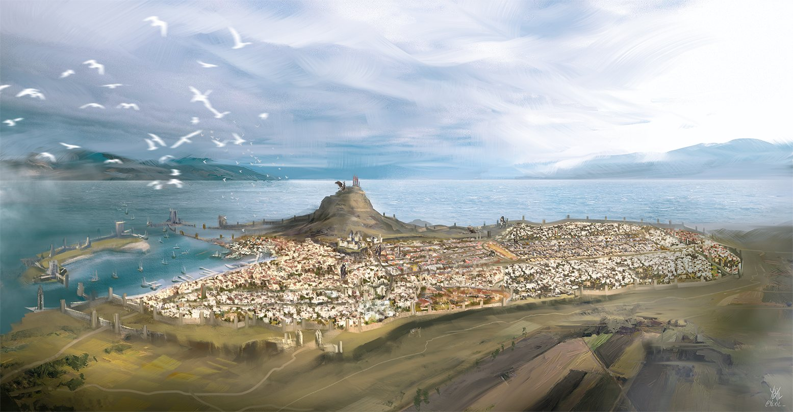

Year of Three Ships Sailing · 1492 DR
The City of Splendours
Off the ship, into the street
Half a million souls, and not one of them minding their own business. Every door along here is open.
The city’s broadsheet. Ink still wet, truth still cheap.
The whole city on the table — drag it, zoom it, name a street.
Work going in Waterdeep. First tag taken, first served.
The roll of adventurers — sheets, levels and inventories. New hands sign the register first.
Where the dice fall. Maps and initiative, live at the table.
The same chart on its own table, with the room to spread out.